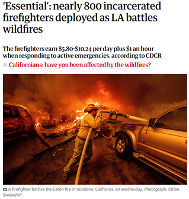

Animals LOVE to do crimes
They're cute- they know they can get away with it.
Not only are animal crimes cute, they're entertaining too.
Anyone or anything can commit a crime. Crimes happen all the time, everywhere, always. Sometimes we forget that crimes can be petty little things rather than some grandiose heist where you steal the royal jewels and take down some guards in the process! But sometimes... if someone especially cute is committing the crime...
They're cute- they know they can get away with it.
Not only are animal crimes cute, they're entertaining too.

Stuck behind bars with a sandwich for being his shoplifitng owners acomplice, but only for a short time!
Or this fella running away with some snacks from the store, SO CUTE!
He gets to go unpunished because its so funny, maybe he will just be banned from the store. When a cute animal does something wrong, they are gently corrected most of the time and trained to change the behavior. People may look for the root of the issue and find a good and reasonable solution to curb an animal's thirst for crime.

Let's now look at some other crimes.
That were committed by humans.
Who made choices that had consequences
and didn't get away with it,
because they aren't considered
to be as cute
as little animals doing crimes.
.
.
.
.
.
.
.
.
.
|  |
Even after working for hours, and sometimes even dangerous jobs,
prisoners wages are still insufficient to meet basic needs such as hygiene products ....
And an important thing to remember, is even people who have commited small
or non-violent crimes, are still subject to this treatment..
There are many issues within the prison system, in what ways can we support the push for change?
There are non-profit organizations dedicated to helping current and former prisoners, as well as doing prevention work!
Anti-Recidivism Coalition